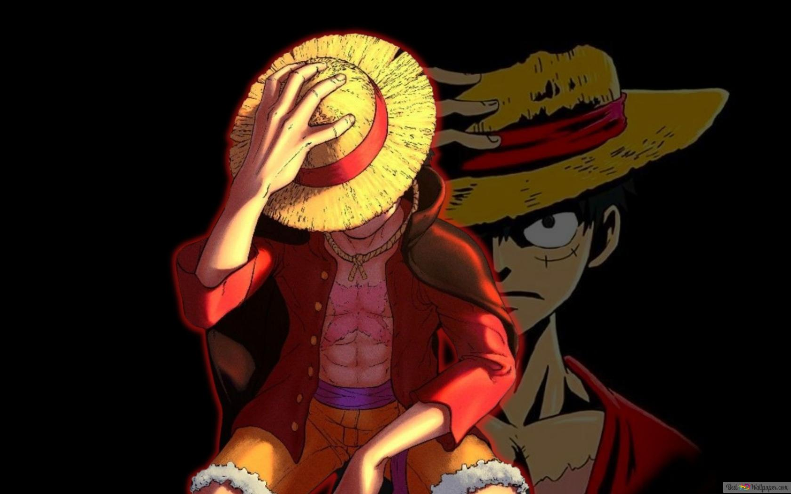

TOP 5 Anime Terbaik Sepanjang Masa
Wajib Banget Nonton!
Anime adalah animasi asal Jepang yang digambar dengan tangan maupun menggunakan teknologi komputer.
Kata anime merupakan singkatan dari animation dalam bahasa Inggris, yang merujuk pada semua jenis animasi.
Anime-Anime berikut ini telah diakui oleh banyak penggemar maupun kritikus, karena jalan ceritanya yang luar biasa dan
grafik yang sangat menawan. Selain itu, adanya perkembangan karakter membuat setiap anime memiliki karakter ikonis tersendiri.
Dalam rekomendasi Top 5 Anime Terbaik Sepanjang Masa berikut ini, terdapat anime action terbaik
yang sayang untuk dilewatkan. Yuk, cek satu-satu!
1. One Piece

Gomu gomu no....! itulah yang sering diucapkan Monkey D. Luffy saat menggunakan jurusnya di salah satu
anime terbaik lainnya, One Piece
Anime bertema petualangan bajak laut ini bahkan masih tayang semejak disiarkan perdana pada tahun 1999 lalu loh
dan merupakan salah satu anime terbaik sepanjang masa di tahun 2023.
Bersama dengan teman-temannya, kru bajak laut topi jerami alias straw hat pirate, luffy bersama teman-temannya
berpetualang ke seluruh penjuru dunia untuk menemukan one piece dan menjadi raja bajak laut.
Penjelasan Lebih Lanjut bisa dilihat disini
| Judul |
One Piece |
| Tayang |
20 Oktober 1999 - sekarang (Fall 1999) |
| Episode |
- |
| Genre |
Action, Drama, Comedy, Super Power, Drama, Fantasy, Shounen |
| Studio |
Toei Animation |
| Rating |
8.54 (MyAnimeList) |
2. Naruto Shippuden
:strip_icc():format(webp)/kly-media-production/medias/653825/original/naruto-anime-naruto-33923256-1920-1080.jpg)
Kalo yang satu ini sih LEGEND! Naruto menjadi salah satu anime terbaik dan terpopuler sepanjang masa selanjutnya, apalagi sempat ditayangkan
sampai episodenya diulang-ulang di televisi Tanah Air loh.
Mengisahkan petualangan tokoh utama Naruto yang bercita-cita menjadi Hokage bersama dengan teman-temannya Sakura, Sasuke dan Kakashi yang menjadi gurunya.
Petualangan Naruto di masa kecil pun terus berlanjut hingga memasuki Naruto: Shippuden di masa jalan cerita makin kompleks.
Nah, dari figur Naruto tersebut mengajarkan agar kita selalu berusaha pantang menyerah menggapai cita-cita. Seperti Naruto yang memimpikan dirinya menjadi seorang Hokage.
Anime Naruto dan Naruto Shippuden kini sudah selesai ditayangkan dan dilanjutkan dengan kisah Boruto, anaknya.
| Judul |
Naruto/Naruto Shippuden |
| Tayang |
3 Oktober 2002 - 8 Februari 2007 (Fall 2002)
15 Februari 2007 - 23 Maret 2017 (Winter 2007)
|
| Episode |
220/500 |
| Genre |
Action, Adventure, Comedy, Super Power, Martial Arts, Shounen |
| Studio |
Studio Pierrot |
| Rating |
7.89/8.19 (MyAnimeList) |
3. Fairy Tail
Fairy Tail menjadi salah satu
anime fantasy rating tinggi yang digemari, termasuk juga versi manga yang dibuat oleh Hiro Mashima.
Fairy Tail berkisah mengenai Lucy Heartfilia bersama dengan Natsu Dragneel yang bergabung dalam guild penyihir Fairy Tail. Lucy terobsesi
untuk mengembangkan kemampuannya bersama dengan Fairy Tail, sementara Natsu juga dalam sebuah misi pencarian seekor naga api bernama Igneel.
Petualangan keduanya tentu sangat menarik buat diikuti. Apalagi seri anime Fairy Tail ini sempat tayang di televisi Indonesia.
Selain itu, Fairy Tail adalah salah satu anime yang penuh inspirasi. Anime ini bisa dengan mudah mencerahkan hari-hari kita, tanpa membuat kita merasa terbeban.
| Judul |
Fairy Tail |
| Tayang |
12 Oktober 2009 - 30 Maret 2013 (Fall 2009) |
| Episode |
175 |
| Genre |
Action, Adventure, Comedy, Magic, Fantasy, Shounen |
| Studio |
Satelight, A-1 Pictures |
| Rating |
8.06 (MyAnimeList) |
4. Attack On Titan
Tentunya Attack on Titan
tak bisa absen dari daftar anime terbaik sepanjang masa. Ceritanya makin epik. Belum lagi grafisnya yang unik dan menakjubkan bikin kamu makin betah nonton.
Di final season-nya, kisah hidup Eren Yeager, Mikasa Ackerman, dan Armin Arlert yang jadi harapan terakhir manusia semakin kompleks saja. Mereka bertemu dengan beberapa karakter baru dan harus berusaha mengalahkan para Titan sebelum semua manusia habis.
Pelajaran hidup yang bisa kamu ambil dari anime ini adalah kerja sama dapat mempermudah dalam menghadapi masalah. Menyendiri memang diperlukan, tapi ingat bahwa kita sebagai manusia masih membutuhkan orang lain.
Peringatan, anime action
terbaik ini termasuk salah satu yang paling kejam karena memiliki banyak
adegan brutal nan sadis
penuh darah dan potongan tubhu. Jadi, hati-hati ya buat kamu yang masih di bawah umur!
| Judul |
Attack on Titan/Shingeki no Kyojin |
| Tayang |
7 April - 29 September 2013 (Spring 2013) |
| Episode |
25 |
| Genre |
Action, Military, Mystery, Super Power, Drama, Fantasy, Shounen |
| Studio |
Wit Studio |
| Rating |
8.49 (MyAnimeList) |
5. Kimetsu No Yaiba
Kayaknya gak afdol kalau Jaka gak memasukkan salah satu anime paling hits tahun 2022 dalam daftar ini.
Demon Slayer: Kimetsu no Yaiba
disebut-sebut jadi salah satu anime terbaik sepanjang masa. Dengan visual menakjubkan dan cerita yang luar biasa, kayaknya gelar itu memang pantas, deh!
Berkisah tentang anak muda bernama Tanjirou Kamado yang harus jadi kepala keluarga setelah ayahnya meninggal.
Suatu ketika, keluarganya habis dibunuh oleh iblis. Tersisa adiknya saja, Nezuko, yang justru berubah jadi iblis haus darah.
Akhirnya, Tanjirou bersumpah akan memburu para iblis demi membalas dendam serta mencari obat untuk adiknya. Ia berjuang bersama grup Demon Slayer Corps yang akan memburu seluruh iblis di dunia.
Dari anime ini, menyadarkan kita untuk selalu melindungi dan menjaga keluarga. Oleh karena itu, serial anime ini sangat direkomendasikan untuk dinikmati bersama dengan keluarga dan sahabat.
| Judul |
Demon Slayer: Kimetsu no Yaiba |
| Tayang |
6 April 2019 - 28 September 2019 (Spring 2019) |
| Episode |
26 |
| Genre |
Action, Supernatural, Demon, Historical, Shounen |
| Studio |
ufotable |
| Rating |
8.56 (MyAnimeList) |